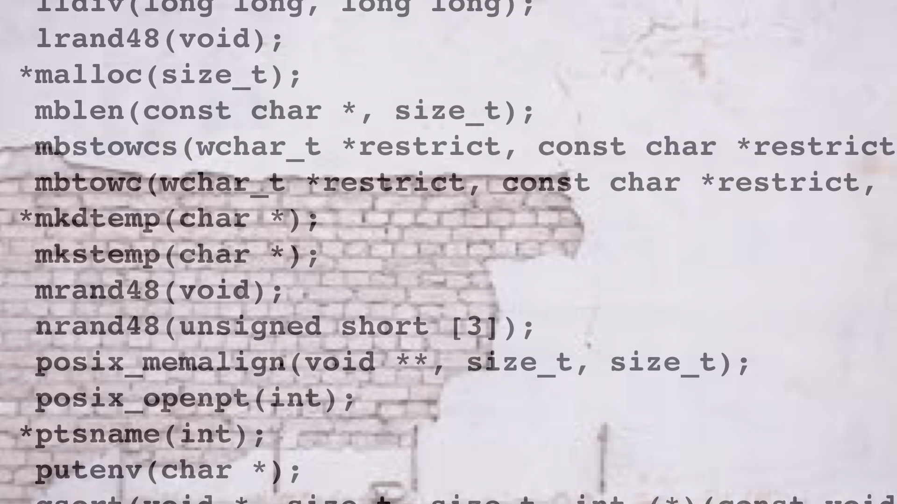

The goal of this transformation is to hide calls to external functions, such as system calls or calls to standard library functions. Our current implementation has two variants:
| Option | Arguments | Description |
|---|---|---|
| --Transform | InitEncodeExternal | Replace direct system calls with indirect ones through dlsym. |
Here, we simply replace direct calls with indirect ones, and load the address of the functions using dlsym().
| Option | Arguments | Description |
|---|---|---|
| --Transform | InitEncodeExternal | Replace direct system calls with indirect ones through dlsym. |
| --InitEncodeExternalSymbols | Comma-separated list of strings | List of of external functions to be encoded. |
| Option | Arguments | Description |
|---|---|---|
| --Transform | EncodeExternal | Replace direct system calls with indirect ones through dlsym. |
| --EncodeExternalObfuscateIndex | BOOLSPEC | Use opaque expressions to compute function addresses. Default=true. |
Consider the following program syscall.c which makes two system calls to getpid
and gettimeofday:
void tigress_init() {}
int main () {
tigress_init();
int x = getpid();
printf("%i\n", x);
struct timeval tv;
int y = gettimeofday(&tv, NULL);
printf ("%ld.%06ld\n", tv.tv_sec, tv.tv_usec);
}
We obfuscate using the following script:
> tigress -ldl \
--Environment=x86_64:Darwin:Clang:5.1 \
--Transform=InitEncodeExternal \
--Functions=tigress_init \
--InitEncodeExternalSymbols=getpid,gettimeofday \
--Transform=EncodeLiterals \
--Functions=tigress_init \
--EncodeLiteralsKinds=string \
--EncodeLiteralsEncoderName=STRINGENCODER \
--Transform=Virtualize \
--Functions=STRINGENCODER \
--Transform=EncodeExternal \
--Functions=main \
--EncodeExternalKind=dynamic \
--EncodeExternalSymbols=getpid,gettimeofday \
--out=syscall_out.c syscall.c
> gcc -o syscall_out syscall_out.c -ldl
The InitEncodeExternal transformation uses dlsym() to load
the system calls we want to hide by name, the EncodeLiterals transformation
hides these names in a function we call STRINGENCODER, the
Virtualize transformation hides what's going on in the STRINGENCODER
function, and finally, the EncodeExternal transformation replaces the
direct calls to the system calls in main() with indirect ones.
The resulting code will look something like this:
void *_externalFunctionPtrArray[2];
void tigress_init(void) {
STRINGENCODER(0, encodeStrings_litStr0);
_externalFunctionPtrArray[0] = dlsym((void *)-3, encodeStrings_litStr0);
STRINGENCODER(1, encodeStrings_litStr1);
_externalFunctionPtrArray[1] = dlsym((void *)-3, encodeStrings_litStr1);
}
void STRINGENCODER(int n , char str[] ) {
STRINGENCODER_$sp[0] = STRINGENCODER_$stack[0];
STRINGENCODER_$pc[0] = STRINGENCODER_$array[0];
while (1) {
switch (*(STRINGENCODER_$pc[0])) {
case STRINGENCODER__store_char$left_STA_0$right_STA_1:
(STRINGENCODER_$pc[0]) ++;
*((char *)(STRINGENCODER_$sp[0] + 0)->_void_star) = (STRINGENCODER_$sp[0] + -1)->_char;
STRINGENCODER_$sp[0] += -2;
break;
...
}
int main( ) {
int x,y;
struct timeval tv ;
...
tigress_init();
x = ((pid_t (*)(void))_externalFunctionPtrArray[1])();
printf((char const *)"%i\n", x);
y = ((int (*)(struct timeval * __restrict , void * __restrict ))
_externalFunctionPtrArray[0])((struct timeval *)(& tv),
(void *)((void *)0));
printf((char const *)"%ld.%06ld\n", tv.tv_sec, tv.tv_usec);
}
Note how this program no longer has any mention of getpid
and gettimeofday. The transformation is purely static,
of course; at runtime it is trivial to see that these functions are
being called.
IDA Pro's F.L.I.R.T.
attempts to identify common library functions by creating a signature from the first
32 bytes of each function. It also provides a tool to identify signatures for
third party libraries called idenlib.
To thwart such attacks you can embed libraries into your program and then obfuscate them.
You can of course do this manually, but Tigress provides functionality to make this simple.
Currently we support the C
We obfuscate using the following script:
string, math, crypto random (PRNG), checksum, parse, bignum and elementary (crude bit-trick approximations of math functions) libraries.
> tigress -ldl \
--Environment=x86_64:Darwin:Clang:5.1 \
--Transform=EncodeExternal \
--Functions=main \
--EncodeExternalKind=embed \
--EncodeExternalSymbols=strcmp \
--Transform=Inline \
--Functions=string_strcmp \
--out=embed.c embed.c
Note that, after embedding, the library functions get prefixed by the name of their
library: the string functions by string__, the math
functions by math__, and the crypto functions by
crypto__. That is, after embedding, the strcmp function is
now called string__strcmp, sin is now called math__sin,
and sha256_update is now called crypto__sha256_update. The elementary functions are prefixed by elem__.
By further obfuscating the embedded functions (here we're inlining strcmp), you can
bypass the F.L.I.R.T. identification.
We currently support embedding the following string functions:
memccpy → string__memccpy
memchr → string__memchr
memcmp → string__memcmp
memcpy → string__memcpy
memmem → string__memmem
memmove → string__memmove
memrchr → string__memrchr
stpcpy → string__stpcpy
stpncpy → string__stpncpy
strcasecmp → string__strcasecmp
strncasecmp → string__strncasecmp
strcasestr → string__strcasestr
strcat → string__strcat
strchr → string__strchr
strcmp → string__strcmp
strcoll → string__strcoll
strcspn → string__strcspn
strdup → string__strdup
strlcat → string__strlcat
strlcpy → string__strlcpy
strlen → string__strlen
strncat → string__strncat
strncmp → string__strncmp
strncpy → string__strncpy
strndup → string__strndup
strnlen → string__strnlen
strpbrk → string__strpbrk
strsep → string__strsep
strspn → string__strspn
strstr → string__strstr
strtok → string__strtok
strtok_r → string__strtok_r
strxfrm → string__strxfrm
wcslcpy → string__wcslcpy
and the following math functions:
acos → math__acos
asin → math__asin
atan → math__atan
atan2 → math__atan2
cbrt → math__cbrt
ceil → math__ceil
cos → math__cos
cosh → math__cosh
exp → math__exp
exp2 → math__exp2
expm1 → math__expm1
fabs → math__fabs
floor → math__floor
fmod → math__fmod
hypot → math__hypot
ldexp → math__ldexp
log → math__log
log10 → math__log10
log1p → math__log1p
log2 → math__log2
pow → math__pow
round → math__round
scalbn → math__scalbn
sin → math__sin
sinh → math__sinh
sqrt → math__sqrt
tan → math__tan
tanh → math__tanh
trunc → math__trunc
and the following crypto functions (AES, DES/3DES, Blowfish, RC4,
SHA-1, SHA-256, MD2, MD5, Base64 and the tiny TEA/XTEA/XXTEA block ciphers -- primitives that F.L.I.R.T. and findcrypt
identify by signature and by their constant tables):
aes_key_setup → crypto__aes_key_setup
aes_encrypt → crypto__aes_encrypt
aes_decrypt → crypto__aes_decrypt
aes_encrypt_cbc → crypto__aes_encrypt_cbc
aes_encrypt_cbc_mac → crypto__aes_encrypt_cbc_mac
aes_encrypt_ctr → crypto__aes_encrypt_ctr
aes_decrypt_ctr → crypto__aes_decrypt_ctr
aes_encrypt_ccm → crypto__aes_encrypt_ccm
aes_decrypt_ccm → crypto__aes_decrypt_ccm
des_key_setup → crypto__des_key_setup
des_crypt → crypto__des_crypt
three_des_key_setup → crypto__three_des_key_setup
three_des_crypt → crypto__three_des_crypt
blowfish_key_setup → crypto__blowfish_key_setup
blowfish_encrypt → crypto__blowfish_encrypt
blowfish_decrypt → crypto__blowfish_decrypt
arcfour_key_setup → crypto__arcfour_key_setup
arcfour_generate_stream → crypto__arcfour_generate_stream
sha1_init → crypto__sha1_init
sha1_update → crypto__sha1_update
sha1_final → crypto__sha1_final
sha256_init → crypto__sha256_init
sha256_update → crypto__sha256_update
sha256_final → crypto__sha256_final
md2_init → crypto__md2_init
md2_update → crypto__md2_update
md2_final → crypto__md2_final
md5_init → crypto__md5_init
md5_update → crypto__md5_update
md5_final → crypto__md5_final
base64_encode → crypto__base64_encode
base64_decode → crypto__base64_decode
tea_encrypt → crypto__tea_encrypt
tea_decrypt → crypto__tea_decrypt
xtea_encrypt → crypto__xtea_encrypt
xtea_decrypt → crypto__xtea_decrypt
xxtea_encrypt → crypto__xxtea_encrypt
xxtea_decrypt → crypto__xxtea_decrypt
Because embedding hides the function bodies but not the constant tables
(AES S-boxes, SHA/MD round constants) that findcrypt-style tools also
scan for, it is worth following an embedded crypto primitive with a data-encoding
transform such as EncodeData or EncodeArithmetic to hide
those tables as well.
and the following random (PRNG) functions:
rand → random__rand
srand → random__srand
rand_r → random__rand_r
drand48 → random__drand48
erand48 → random__erand48
lrand48 → random__lrand48
nrand48 → random__nrand48
mrand48 → random__mrand48
jrand48 → random__jrand48
srand48 → random__srand48
seed48 → random__seed48
lcong48 → random__lcong48
and the following checksum functions (whose constant tables are prime findcrypt targets):
crc32 → checksum__crc32
crc16 → checksum__crc16
adler32 → checksum__adler32
and the following parse functions:
atoi → parse__atoi
atol → parse__atol
atoll → parse__atoll
abs → parse__abs
labs → parse__labs
llabs → parse__llabs
bsearch → parse__bsearch
and the following bignum (big-integer) functions (a LibTomMath subset):
mp_init → bignum__mp_init
mp_clear → bignum__mp_clear
mp_add → bignum__mp_add
mp_sub → bignum__mp_sub
mp_mul → bignum__mp_mul
mp_exptmod → bignum__mp_exptmod
mp_cmp → bignum__mp_cmp
mp_set_u32 → bignum__mp_set_u32
mp_read_radix → bignum__mp_read_radix
mp_to_radix → bignum__mp_to_radix
and the following elementary functions — crude, cheap approximations
of math functions computed directly from the IEEE-754 bit pattern (the
fast-inverse-square-root family of tricks). They pull in no libm, are each
only a handful of integer operations, and are deliberately approximate: you trade
accuracy for size and self-containment. Because only the caller knows the input range and
the tolerable error, the choice is expressed in the function name, which encodes
the valid input domain and a libm-verified error bound. Read a name as:
dom_<lo>_<hi> — the valid input range, with
p=decimal point, m=minus sign, and
inf/minf=±∞. So dom_0_inf means
every positive value (x > 0, roughly 1e-308 to 1e308) and dom_minf_inf
means every value. Outside the stated domain the result is undefined.
abserr_<v> — an absolute error bound:
|approx − true| ≤ v everywhere on the domain.
relerr_<v> — a relative error bound:
|approx − true| / |true| ≤ v everywhere on the domain.
exact — no error at all.
The logarithm functions are the clearest case, so they are worth
describing in full. Every one is valid over the entire positive range
dom_0_inf (x > 0, i.e. every positive double, from about 1e-308 up to
about 1e300), and their error is absolute and uniform: the bit trick
makes the approximation differ from the true logarithm by a bounded additive amount that
does not grow with x. For instance log2__dom_0_inf__abserr_0p05(x)
returns a value within ±0.05 of log2(x) for every x > 0
— near 1, near 1e-300 and near 1e300 alike (that 0.05 is an error in the value of
the logarithm, not a percentage of it). floorlog2 is the exception: it
returns the integer ⌊log2 x⌋ exactly, using only integer
operations. The variants trade a little more code for a tighter bound:
floorlog2__dom_0_inf__exact int ⌊log2 x⌋, EXACT for all x > 0 (reads the exponent field; integer-only)
log2__dom_0_inf__abserr_0p09 log2 x, |error| ≤ 0.09 for all x > 0 (raw "reinterpret the bits as a line")
log2__dom_0_inf__abserr_0p05 log2 x, |error| ≤ 0.05 for all x > 0 (same line, constant recentred)
ln__dom_0_inf__abserr_0p04 ln x, |error| ≤ 0.04 for all x > 0 (= log2 × ln2)
log10__dom_0_inf__abserr_0p02 log10 x, |error| ≤ 0.02 for all x > 0 (= log2 × log10(2))
The remaining functions follow the same convention. exp/exp2
run the log trick backwards; sqrt/rsqrt/cbrt halve,
negate or third the exponent in the bits, and the sqrt family offers a
ladder from the raw bit trick to one or two Newton refinement steps. Their error is
relative (a percentage of the true value), so a relerr of
0p07 means ≤ 7%, 0p002 means ≤ 0.2%, and
0p000002 means ≤ 0.0002% (essentially full double precision):
exp2__dom_m1000_1000__relerr_0p07 2^x, relative error ≤ 7% for -1000 ≤ x ≤ 1000
exp__dom_m700_700__relerr_0p07 e^x, relative error ≤ 7% for -700 ≤ x ≤ 700
sqrt__dom_0_inf__relerr_0p07 sqrt x, relative error ≤ 7% for x > 0 (bit trick only)
sqrt__dom_0_inf__relerr_0p002 sqrt x, relative error ≤ 0.2% for x > 0 (+1 Newton step)
sqrt__dom_0_inf__relerr_0p000002 sqrt x, relative error ≤ 0.0002% for x > 0 (+2 Newton steps; ~full precision)
rsqrt__dom_0_inf__relerr_0p002 1/sqrt x, relative error ≤ 0.2% for x > 0 (fast inverse square root)
cbrt__dom_0_inf__relerr_0p04 cbrt x, relative error ≤ 4% for x > 0
fabs__dom_minf_inf__exact |x|, EXACT for all x (clears the sign bit)
neg__dom_minf_inf__exact -x, EXACT for all x (flips the sign bit)
isqrt__dom_0_inf__exact ⌊sqrt n⌋, EXACT for all n (unsigned integer sqrt; integer-only)
Audio-DSP additions. The following cover the operations that recur in
signal processing — RMS/energy, dB conversion, Euclidean distance, rounding/indexing,
clamping, and a cheap trig for cosmetic animation. As above they are integer or branchless
where possible, and each name carries a libm-verified bound. For decibel
work note that the plain bit-line logs above have a uniform 0.02 absolute error (about
0.4 dB); the polynomial-refined log10 here is accurate to 0.0001 (about
0.002 dB), and its inverse exp10 (10x —
the only form dB↔linear needs) to 0.01%:
log2__dom_0_inf__abserr_0p0003 log2 x, |error| ≤ 0.0003 for all x > 0 (mantissa polynomial; accurate)
log10__dom_0_inf__abserr_0p0001 log10 x, |error| ≤ 0.0001 for all x > 0 (accurate dB; ~0.002 dB level error)
exp2__dom_m1000_1000__relerr_0p0001 2^x, relative error ≤ 0.01% for -1000 ≤ x ≤ 1000 (accurate)
exp10__dom_m300_300__relerr_0p0001 10^x, relative error ≤ 0.01% for -300 ≤ x ≤ 300 (accurate dB→linear)
exp10__dom_m300_300__relerr_0p07 10^x, relative error ≤ 7% for -300 ≤ x ≤ 300 (cheap; single bit trick)
Euclidean distance (a cheap approximation and an accurate one), cosmetic trig that is self-reducing so it is valid for any input, plus exact rounding, clamping and sign/wraparound — the last group is pure integer or branchless:
hypot__dom_finite__relerr_0p04 sqrt(a^2+b^2), relative error ≤ 4% (cheap "alpha max + beta min"; no sqrt)
hypot__dom_finite__relerr_0p000002 sqrt(a^2+b^2), relative error ≤ 0.0002% (sqrt bit trick + 2 Newton steps)
sin__dom_all__abserr_0p002 sin x, |error| ≤ 0.002 for ALL x (parabola + correction; self-reducing)
cos__dom_all__abserr_0p002 cos x, |error| ≤ 0.002 for ALL x
floor__dom_m9e18_9e18__exact floor x, EXACT for |x| < 2^63 (integer cast)
ceil__dom_m9e18_9e18__exact ceil x, EXACT for |x| < 2^63
round__dom_m9e18_9e18__exact round x, EXACT for |x| < 2^63 (half away from zero)
fmin__dom_all__exact min(a,b), double, EXACT
fmax__dom_all__exact max(a,b), double, EXACT
fclamp__dom_all__exact clamp(x,lo,hi), double, EXACT
imin__dom_all__exact min(a,b), int, EXACT
imax__dom_all__exact max(a,b), int, EXACT
iclamp__dom_all__exact clamp(x,lo,hi), int, EXACT
signum__dom_all__exact sign(x) -> -1/0/1, double, EXACT
isignum__dom_all__exact sign(x) -> -1/0/1, int, EXACT
iwrap__dom_all__exact wrap i into [0,n) for n > 0, int, EXACT (modular index)
ioctl.
dlsym idea in a
DEFCON
talk.
-ldl option.
On MacOS/clang this is not necessary.
--Environment= wrong, your program will fail.
LibC string and math
libraries and a public-domain crypto library. We have, however,
developed a tool that makes embedding new libraries into Tigress more-or-less trivial. If you
have a library you would like to add to Tigress, let us know: we just require the
source to be published under a permissive license.